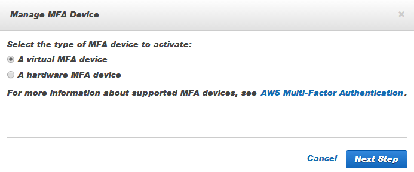

아마존 웹서비스
AWS 보안(IAM)
학습 목표
- 보안 기본개념을 학습한다.
- 클라우드 보안
- 아마존 웹서비스 보안
클라우드를 사용하게 되면 기본적으로 활용하는 컴퓨터의 자원이 자본이 허락하는 범위 내에서 거의 무한으로 가능하다. 무어의 법칙에 의해서 컴퓨터 성능 뿐만 아니라 네트워크, 저장소 등 관련 자원의 가격이 급격히 하락하고 있어 과거에 비해 동일한 예산을 가지고 활용할 수 있는 기회가 급속히 확대되었다. 따라서 관리해야 할 컴퓨터 자원도 늘어나고 거기에 맞춰 보안에 대한 관심도 가져야 한다.
1. 보안개념
- 접근 제어(Access Control) : 누가(Who) 무엇(What)을 사용허가(Grant)하거나 거부(Deny)하는 기능. 통상 컴퓨터 자원을 생성하고(Create), 읽고(Read), 변경하고(Update), 삭제(Delete)하는 것.
- 식별 : 사용자명 등을 통해 사용자가 식별정보를 제공한다.
- 인증 : 비밀번호 등을 통해 식별정보를 확인한다.
- 허가 : 사용자가 컴퓨터 자원에 대한 접근권한 및 정책을 지정한다.
- 책임성(Accountability) : 사용자가 무엇을 했는지 모니터링하고 로그를 기록.
- 허가 (Authorization) : 컴퓨터 자원에 대한 접근 권한 및 정책을 지정하는 기능.
- 인증 (Authentication) : 인증(認證)은 참이라는 근거가 있는 무언가를 확인하거나 확증하는 행위이다. 객체인증은 출처를 확인, 컴퓨터에서 인증은 로그인 등을 통해 통신상에서 사람의 디지털 정체성을 확인하는 과정.
1.1. 정보보안 목표와 CIA
기밀성, 무결성, 가용성의 첫글자를 따서 정보보안의 목표를 CIA라고 부르기도 한다.
- 기밀성 (Confidentiality): 정보에 대한 접근(Access)이 허가(Authroized)되지 않는다면 사용자, 프로세스, 디바이스에 노출되지 않는 속성.
- 무결성 (Integrity): 허가(Authorized)되지 않는 방식으로 정보가 생성, 변형되거나 삭제되지 않는 속성.
- 가용성 (Availability): 접근(Access)가능한 속성. 즉, 허가받은 사용자 또는 객체가 정보에 접근하려 하고자 할 때 방해받지 않도록 하는 속성.
- 부인봉쇄 (Non-repudiation): 정보를 전송한 사실과 전송받은 사실을 부인할 수 없는 속성.
1.2. 암호화(cryptography)
암호학은 정보를 보호하기 위한 언어학적 및 수학적 방법론을 다루는 학문이지만, 최근에는 일반적으로 널리 사용되어 일상생활에 꼭 필요한 기술이 되었다. 현대 암호학에서 기밀성(Confidentiality), 무결성(Integrity), 인증(Authentication)이 중요한 3대 요소다. 즉, 의도하지 않는 제3자에 의해서 정보가 처리될 수 없고, 변경될 수도 없으며, 송신자와 수신자가 상호 신원이 확인되어야 한다.
- 암호화(encryption) : 평문(plaintext)을 암호화된 정보(암호문)로 바꾸는 과정.
- 해독(decryption): 암호화된 정보(암호문)를 다시 평문으로 되돌리는 과정.
암호화는 두가지 구성요소로 구성되어 있다. 하나는 알고리즘(Algorithm)이고 다른 하나는 키(key)다.
- 대칭키(Symetric) 암호 시스템 : 알고리즘이 상대적으로 단순한 장점이 있지만 키 관리에 어려움이 많다. 하지만, 컴퓨터 시스템이 늘어나고 사용자가 늘어나면 컴퓨터 시스템 관리쪽에서도 키의 숫자가 늘어나고, 사용자도 관리하는 키 숫자가 늘어나는 단점이 있다. 이러한 단점이 공개키 암호 시스템 출현의 바탕이 됨.
- DES(Data Encryption Standard) : 블록 암호의 일종으로, 미국 NBS (National Bureau of Standards, 현재 NIST)에서 국가 표준으로 정한 암호이다. DES는 대칭키 암호이며, 56비트의 키를 사용한다.
- 비대칭키(Asymetric) 암호 시스템 : 공개키 암호 시스템에서 각 사용자는 두 개의 키를 부여 받는다. 그 하나는 공개되고(공개키, public key), 다른 하나는 사용자에 의해 비밀리에 관리(비밀키, private key) 되어야 한다. 공개키 암호 시스템에서 각 사용자는 자신의 비밀키만 관리하면 되므로 키 관리의 어려움을 줄일 수 있다.
- RSA : 1977년 로널드 라이베스트(Ron Rivest), 아디 샤미르(Adi Shamir), 레너드 애들먼(Leonard Adleman)의 연구에 의해 체계화되었으며, RSA라는 이름은 이들 3명의 이름 앞글자를 딴 것으로, 대표적인 공개키 암호시스템의 하나로, 암호화뿐만 아니라 전자서명이 가능한 최초의 알고리즘으로 알려져 있다.
1.3. 클라우드
클라우드 보안은 리눅스 운영체계의 Pluggable Authentification Module(PAM)을 사용하여 다음 기능을 사용하여 인증을 한 곳에서 처리한다.
- 계정관리 (Account)
- 인증관리 (Authorization)
- 비밀번호 관리 (Password)
- 세션관리 (Session)
클라우드는 응용프로그램수준에서 접속인증관리를 지원하기 위해서 SELinux (Security Enhanced Linux)를 사용한다. SELinux는 미국 NSA(National Security Agency)에서 개발되었으며, 보안 목적을 충족하는 보안 정책 설정 파일을 포함하고 있다. 파일이나 프로세스를 사전에 미리 정해진 클라우드 보안정책에 따라 SElinux를 사용하여 다른 응용프로그램이나 시스템과 독립적으로 실행할 수 있다. SELinux와 함께 CGroups (Control Groups)를 사용하여 커널레벨에서 자원을 제약함으로써 IaaS클라우드나 가상화에 기대지 않고 운영체제상에서 멀티테넌시를 지원하게각 응용프로그램이 독립적으로 실행함으로써 보안을 강화했다.
- SELinux: 리눅스 커널의 MAC (Mandatroy Access Control)을 구현한 것으로 DAC (Discretionary Access Control)에서 제공한 것 이상 실행되는 것을 확인한다. SELinux는 시스템 운영 정책에 정의된 파일, 프로세스의 규칙을 실행한다. SELinux는 각 기어와 기어 내 항목이 유니크하게 명명되어 있으므로 상위 수준에서 분리되어 운영될 수 있도록 한다.
- Control Groups (cgroups): Control Groups는 응용프로그램 사이에 프로세서, 메모리, 입출력을 할당하며, 메모리 사용, 스토리지, 네트워크 입출력 사용, 프로세스 우선순위에 대한 리소스 제어를 한다.
- Namespaces: 네임스페이스(Namespace)는 프로세스 그룹을 분리함으로써 다른 그룹에서 자원을 볼 수 없게 워크로드를 구분하고 격리한다.
1.4. 보안 업데이트
$ ssh root@169.5XX.XXX.XXWelcome to Ubuntu 14.04.2 LTS (GNU/Linux 3.13.0-48-generic x86_64)
* Documentation: https://help.ubuntu.com/
89 packages can be updated.
53 updates are security updates.
Last login: Wed Jun 3 21:19:10 2015 from 112.XXX.XXX.XXX
root@shiny:~#리눅스 시스템을 설치하고 나면 지속적인 패치작업으로 보안을 강화하고 기능도 향상된다. 이것을 적용하기 위해서 apt-get update, apt-get upgrade를 하지만 동일한 메시지가 가상컴퓨터에 접속할 때마다 나오게 된다. 이유는 리눅스 시스템에 설치된 응용프로그램을 갱신하는 것이지 리눅스 자체를 갱신하고 기능향상을 하는 것은 아니다. 이를 위해서 다음 두가지 명령어를 동시에 실행하면 보안과 기능향상된 리눅스 시스템을 사용할 수 있다.
root@shiny:~# sudo apt-get update && sudo apt-get dist-upgrade정상적으로 기능 및 보안 개선작업이 이루어졌기 때문에 다시 로그인하게 되면 재부팅하라는 메시지가 나온다. sudo apt-get update && sudo apt-get dist-upgrade 하고 sudo reboot 명령어로 바로 재부팅하는 것도 좋다.
Welcome to Ubuntu 14.04.2 LTS (GNU/Linux 3.13.0-48-generic x86_64)
* Documentation: https://help.ubuntu.com/
*** System restart required ***
Last login: Wed Jun 3 21:22:22 2015 from 112.XXX.XXX.XXX2. 다중 인증(Multi-Factor Authentification)
SoftLayer에서는 이중인증(Two-Factor Authentification)을 지원하듯이 다른 대다수 클라우드 서비스 제공업체와 마찬가지로 아마존 웹서비스에서는 다중인증(Multi-Factor Authentification) 보안 기능을 제공한다.
기본적으로 비밀번호만 사용하게 되면 상대적으로 비밀번호가 강력하더라도 보안에 취약할 수가 있다. 따라서, 알고 있는 것과 가지고 있는 것을 동시에 확인해서 보안을 강화할 수 있다. 마치 은행에서 예금을 인출할 때 알고 있는 것은 비밀번호, 갖고 있는 것은 체크카드를 가지고 본인인증을 강화해서 금융사고에 대비하는 것도 동일하다.
IAM 서비스를 클릭하면 하단에 (보안 상태)Security Status 메뉴가 있고, 루트 계정 MFA 활성화(Activate MFA on your root account)를 클릭하면, Manage MFA 버튼이 있다. 이것을 클릭하면 QR 코드가 나오고 소지하고 있는 가장 일반적인 핸드폰으로 QR 코드를 읽게 되는데, 만약 일회용 비밀번호 (OTP, One-Time Password) 앱이 없으면 설치하고(저자의 경우 구글 플레이 앱스토어에서 Google OTP 앱을 설치했다.), 설치되어 있다면 두번 6자리 인증번호를 입력하면 설정이 완료된다.

참고로, SoftLayer에서는 계정정보에서 Two-Factor Authentication 메뉴를 클릭하며 구글 인증(Google Authentication) 통해 알고 있는 SoftLayer 계정 비밀번호와 함께 스마트폰에 Google Authenticator app 설치가 필요하다. 구글 앱스트로어 Play로 들어가서 Google OTP를 설치한다. 스마트폰 바탕화면에 OTP가 생성된다. 이제 SoftLayer 계정정보에 나타나는 QR 코드를 스캔하고 확인을 누르게, 스마트폰을 이중인증 과정에 등록하면 전체적인 인증등록 과정이 완료된다.
만약 Google Authentification is:를 활성화(Active) 상태로 두었다면, 이제부터 SoftLayer 로그인 https://control.softlayer.com/하게 되면, 비밀번호 외에 일회용 비밀번호(One-Time Password, OTP)를 요청한다. 당황하지 말고, 스마트폰을 꺼내 Google OTP 앱을 열어 비밀번호를 입력한다. 이제부터 좀더 강화된 클라우드 보안서비스를 마음껏 누려보자.